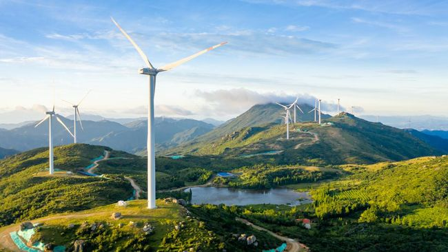
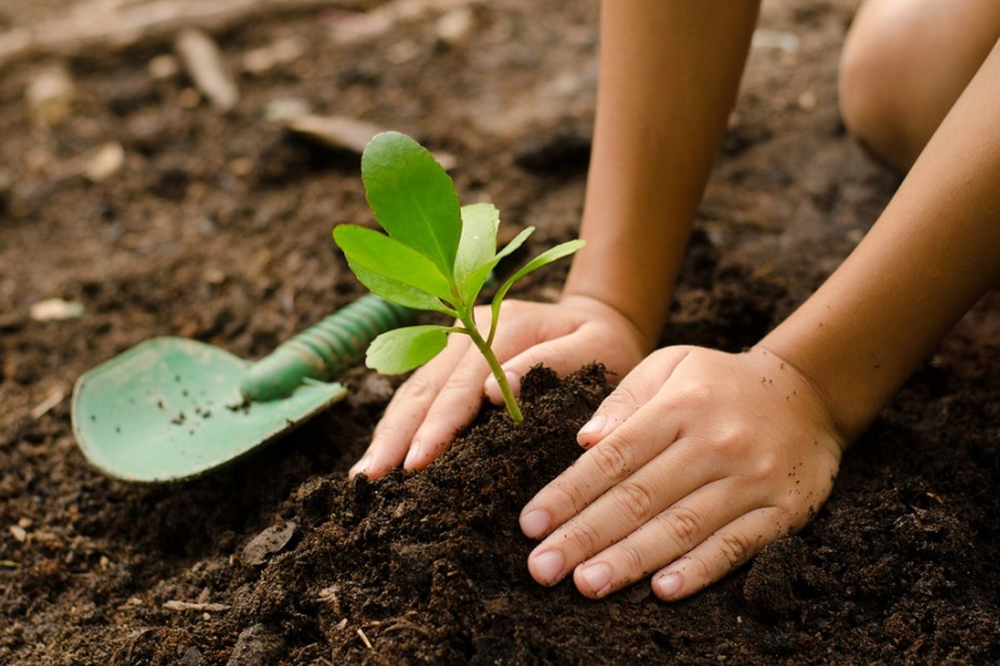

Ayo Sayangi Bumi Kita
Berikut cara yang bisa kita lakukan

Hemat energi
Matikan peralatan listrik saat tidak digunakan untuk menghemat energi dan mengurangi tagihan listrik.

Gunakan Fasilitas Umum
Untuk mengurangi polusi dan kemacetan, gunakan transportasi umum atau berbagi kendaraan dengan teman.

Mengurangi Penggunaan Energi Fosil
Beralih ke energi terbarukan, seperti tenaga angin, surya, atau air.

Daur Ulang dan Kurangi Limbah
Mengurangi penggunaan barang sekali pakai dan mendaur ulang barang yang bisa dipakai kembali.

Menanam Pohon
Menanam pohon membantu menyerap karbon dioksida dan menyediakan oksigen.

Mendukung Produk Lokal
Membeli produk lokal untuk mengurangi jejak karbon dan mendukung perekonomian lokal.